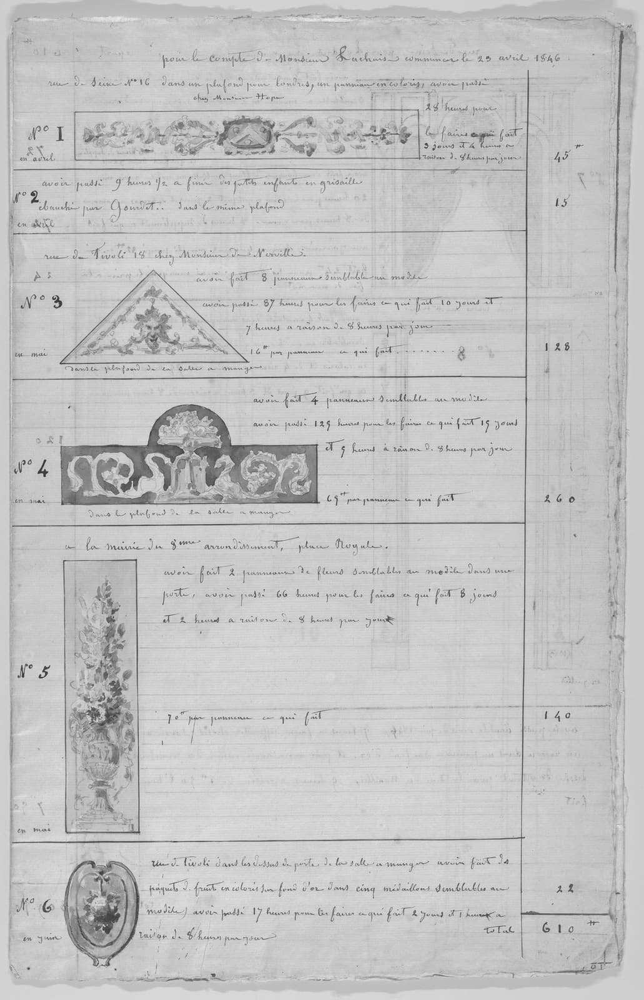
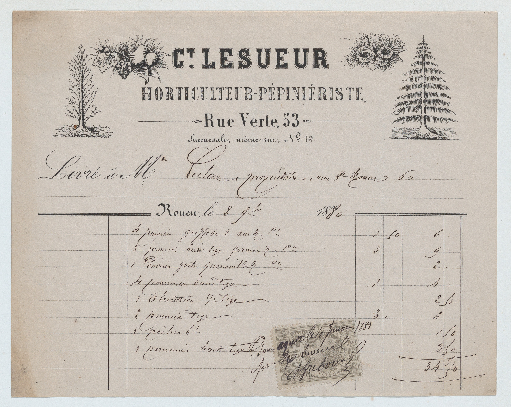
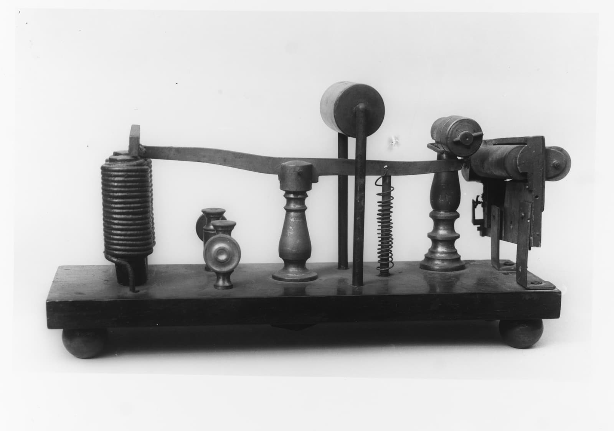
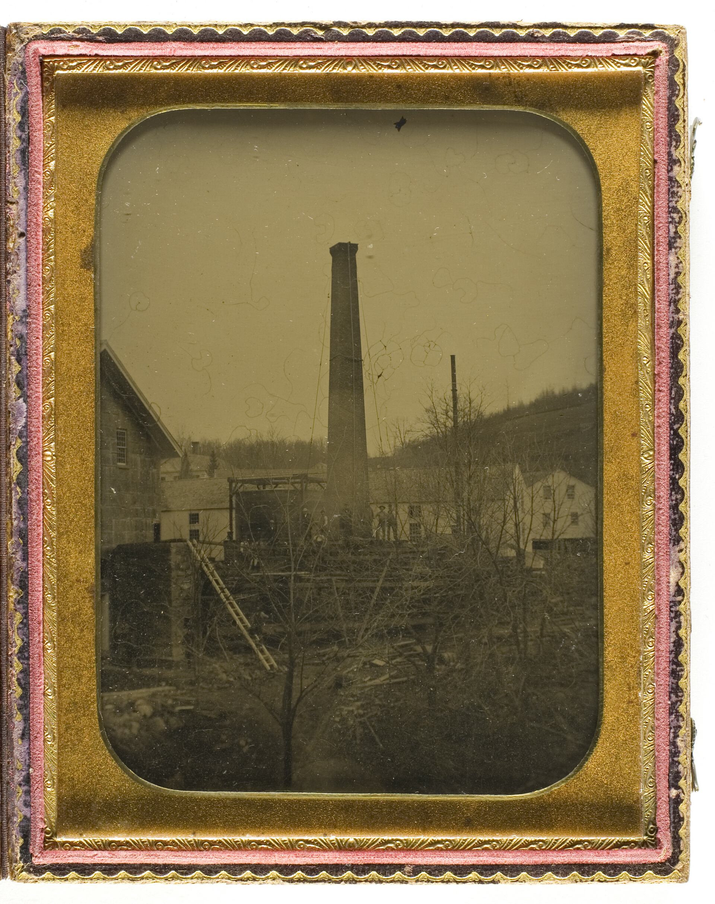
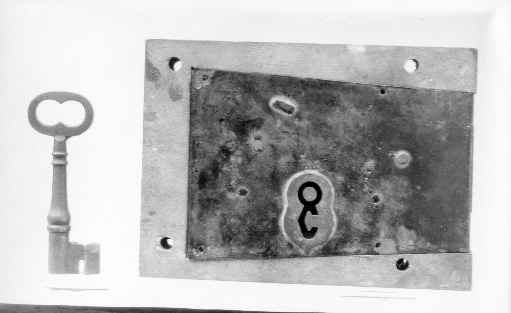

AI 已用在理賠、建檔與阻詐
三則案例都是金融保險的日常作業，每一則都有可以引用的成果。
手繪證書，1800 年
AI 智能理賠解決方案既有系統以微服務架構的 DigiLism 專門協助處理核心銀行系統或過時大型機的資料轉換及通訊機制變更，可代替企業服務匯流排（ESB）
開放銀行、金融檢查與政府 API 規範的要求，digiRunner 已有對應功能，專案不必從零設計合規架構。
機關原本的防護digiRunner 透過 Nginx 將流量分配到各個伺服器端點，以確保 API 服務的穩定性。此外，也可整合現有的 WAF 廠商，如 F5 或 No Name Security。

規範
三則案例都是金融保險的日常作業，每一則都有可以引用的成果。
手繪證書，1800 年
AI 智能理賠解決方案
商號發票，1880 年
AI 智慧建檔解決方案手寫帳冊，1846 年
看所有成功案例
核心系統與大型主機透過 API 接進來，AI 模型也走同一道 Gateway。
依場景選擇合適的大語言模型，從智能客服、語音質檢到文件辨識都有產品。

碳盤查、產品碳足跡與 CBAM 申報資料，用同一套平台整理。

使用者登入不必用密碼，系統日誌裡的入侵與攻擊由機器學習找出來。
以微服務架構的 DigiLism 專門協助處理核心銀行系統或過時大型機的資料轉換及通訊機制變更，可代替企業服務匯流排（ESB）
整合 MCP 協定與 AI Gateway 架構，讓 AI 模型安全串接企業 API、資料與業務流程
SysTalk.ai 支援主流開源與企業級 LLM（如 70B 模型），企業可依場景選擇最合適的模型
碳盤查 盤查企業自身碳排放 包括跨地區/廠區/設備/系統
CBAM 自動文件資訊化碳排 並產出申報清冊
碳足跡 計算企業產品碳足跡 計算相關供應鏈碳足跡
FIDO2 無密碼 零信任身分驗證
利用機器學習模型分析日誌並檢測異常，能快速識別入侵與攻擊
OrientAI 只部署在企業端，資料的掌控權在企業手上。Agent 的權限、影子 AI 與 Token 用量都有管控；搭配群聯 aiDAPTIV，地端架構離線也能運行。
OrientAI 統一管控（示意）
Token 用量監控
昕力自己研發產品，也負責導入規劃、模型設定、建置與應用模組設計，決策者不必在產品原廠和導入廠商之間協調。
昕力資訊提供完整的導入規劃、模型設定、建置與應用模組設計服務
導入前
導入前
導入前
導入中
成立年份、海外子公司、資安認證與雲端夥伴關係，是評估長期合作風險的資料。關於昕力
昕力資訊的紀錄：昕力資訊創立於 2005 年。接著，2008 年首度跨足金融產業，為華南銀行建置 CRM 系統。往海外，分別在2017、2019年設立新加坡與越南子公司；然後 2020年以「TPIsoftware」 邁入國際。開發流程上，企業產品中台之開發流程 獲ISO27001 認證；雲端上，正式成為 Google Cloud 合作夥伴。
今天的據點：台北總部 新加坡 越南 日本 新竹專案管理中心 台中專案管理中心 台南開發中心 高雄開發中心。
填寫聯絡表單，說明您的產業、現有系統與想接上的服務，昕力的業務會與您聯絡。回覆時間：待補。